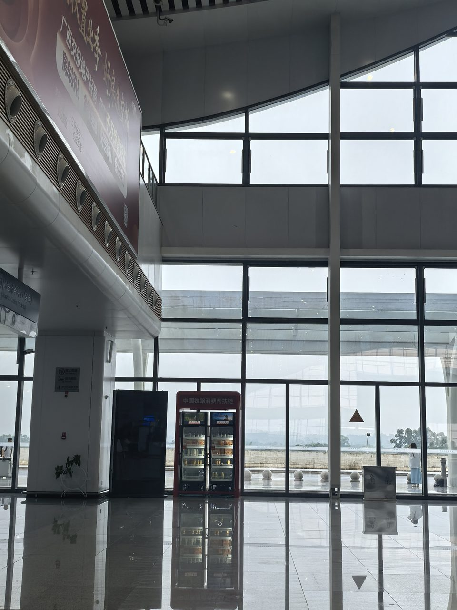
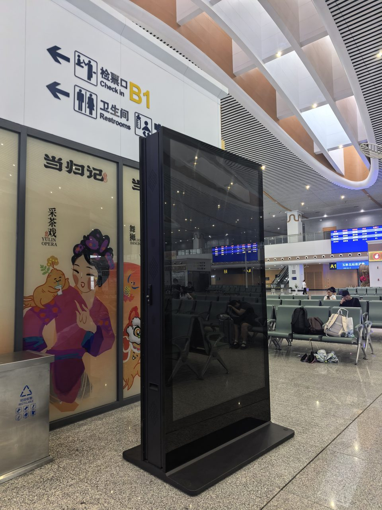
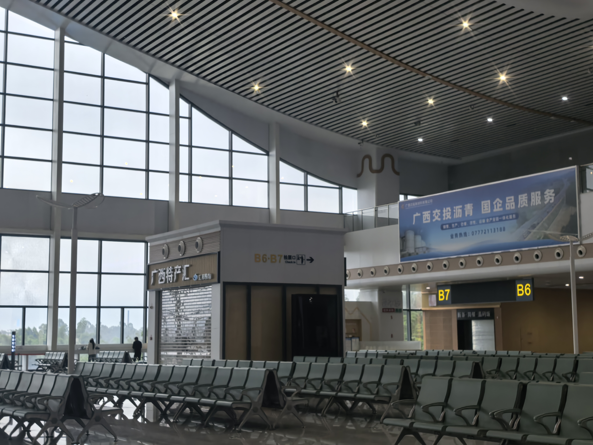
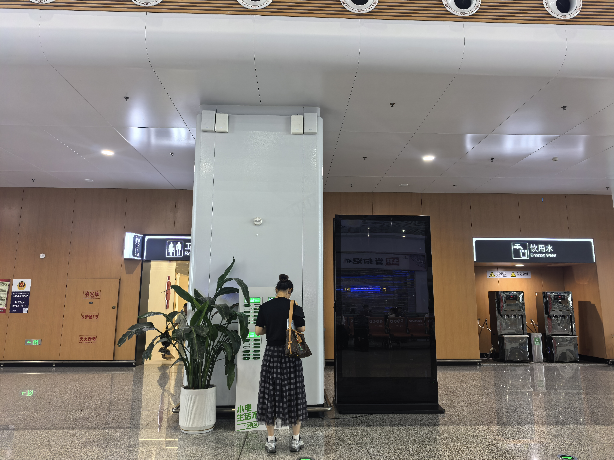

先讲一个真事。
去年有位客户，投了玉林北站候车厅一块灯箱，12米宽3米高，位置在安检口正对面——人流量最大的地方之一。画面设计花了三千块找设计师做的，整体是深蓝色底加金色字，排版很精致，字体也考究。

上刊一个月后，客户打电话问我们："效果怎么样？"
我说实话：不太行。
问题出在哪？他那个深蓝底色在站内暖色灯光下基本糊成一片黑，金色小字从5米外就看不到了。一块每月花8万块买下来的黄金点位，设计费三千，视觉效果还不如旁边那家茶饮品牌白底红字的海报。

这就是高铁站广告最冤的浪费——点位买对了，画面做错了。
我在玉林北站、横州站、兴业南站看过几百块广告牌，这种案例不是个例。今天这篇文章，就是把站内广告最常见的设计坑和避坑方法说清楚。不是教科书那一套——是实打实在站里站着看出来的。
 ▲ 玉林北站候车厅152㎡LED巨幕——动态大屏的设计规则和静态灯箱完全不同，很多品牌把灯箱画面直接搬上LED，效果打了对折
▲ 玉林北站候车厅152㎡LED巨幕——动态大屏的设计规则和静态灯箱完全不同，很多品牌把灯箱画面直接搬上LED，效果打了对折一、LED大屏：别把电视广告搬上高铁屏
玉林北站候车厅有块152㎡的LED大屏，19.86米宽7.68米高，在整个广西高铁站里排前列。每天15秒一条轮播150次，曝光量很高。
但我在现场观察过几十条广告，发现一条规律：在LED大屏上效果好的广告，和电视/手机上效果好的广告，根本是两回事。
坑一：画面太"满"
品牌方总觉得15秒很珍贵，恨不得把产品图、Logo、slogan、二维码、地址全部塞进去。结果旅客抬头那一两秒，什么都没看清。
LED屏的正确用法是：一条广告只讲一件事。高铁旅客不是坐在沙发上慢慢看广告的——他们在走路、在找检票口、在拖行李。你只有2到3秒的注意力窗口。这2到3秒，能让人记住品牌名和品类就够了。
举个例子：某汽车品牌在LED上投广告，15秒里前5秒是宏大的航拍镜头，中间5秒是车在各种场景里跑，最后3秒出现Logo。看着是挺大气——但旅客就抬头1秒钟，刚好看到航拍镜头，完全不知道这是谁家的广告。
正确做法：开头1秒直接把品牌Logo和核心卖点放出来，后面才是氛围铺垫。广告人管这叫"信息前置"——其实就是别让旅客猜你是谁。
坑二：文字太小、太多了
LED屏观看距离通常在5到30米。你在电脑屏幕上看设计稿觉得字够大了——挂上去旅客根本看不见。
大屏画面上的文字，一条信息为宜，两行封顶。字号按"30米外能辨认"来定。不要写"年度钜惠全场低至5折起"这种废话——就写"5折"两个大字，加品牌名。
我见过做得好的案例：某白酒品牌，15秒整条画面就三个元素——瓶身、品牌名、一句五字广告语。背景纯白。就这样，简单到粗暴。但它在那152㎡巨幕上一亮，整个候车厅东侧的人都能认出来。
坑三：动态特效喧宾夺主
LED屏的优势是能动，但很多品牌把它当成了劣势。各种翻转、爆炸、粒子特效往上堆，画面眼花缭乱——看完了只记得"刚才有东西在闪"。
高铁站LED环境光很强、顶部有大量照明灯。动态效果在强环境下，对比度和辨识度会大幅下降。真正有效的做法是：背景尽量简单干净，核心信息用静态或微动效果呈现。品牌Logo全程保持可见，别玩"最后3秒才露脸"那一套。

▲ 玉林北站候车厅灯箱12m×3.2m——这种尺寸的灯箱，人体走过去只能看清2米以内的大字。你的品牌名占画面多大比例，决定了多远的旅客能认出你二、灯箱：关掉PS再看一遍
南玉高铁三站共有50多个灯箱点位，分布在候车厅、进出站通道、出站口等位置。灯箱是三类媒体中"停留时间最长"的一种——旅客在经过时会完整看到画面。
但灯箱也有自己的一套规则。
坑四：深色背景在站内灯光下会"糊"
开头那个例子就是这个坑。
高铁站室内照明以暖白和冷白混合为主，灯箱本身也有背光。在这种光照条件下，深蓝、深灰、深紫等暗色系背景的对比度会明显下降。你在设计师的Mac屏幕上看着"高级感满满"的暗色调，在站里看起来就像一块发光但看不清的板子。
不是说不能用深色——但如果你用深色，核心信息（品牌名、产品图）的亮度和对比度要拉到电脑屏幕上看都觉得"有点刺眼"的程度，在站内才刚好。
坑五：品牌名和Logo太小——"留白美学"不适用于灯箱
设计师喜欢留白，这个可以理解。但灯箱画面不是杂志内页——旅客不会凑近了仔细看。
以玉林北站出站口正对面E20灯箱为例：13.7米宽4.4米高，旅客出站时从30米外开始看到这块屏，走到正面大约3到5秒。这3到5秒里，如果你的Logo只占画面10%的面积，那就是一场"猜猜我是谁"的游戏。
灯箱广告的铁律：品牌名或Logo占画面15%以上面积，从20米外能清晰辨认。这个标准在电脑上看会觉得很"粗暴"，但在站内刚刚好。
坑六：出站通道灯箱——不是给你"品宣"用的
出站通道的灯箱（如E1-E10）和候车厅灯箱是两种完全不同的阅读场景。
候车厅：旅客坐着等，无聊，可以慢慢看——适合放品牌故事、产品细节、服务介绍。
出站通道：旅客在走路，手里可能拖着行李、拿着手机，注意力高度分散。这时候的灯箱只有一个任务——让人记住品牌名和品类。画面越简单越好。品牌名加一句定位语，顶多加一个产品图。二维码可以放，但要大（至少占画面10%面积），否则没人扫。
见过一个反面教材：某教育机构在出站通道灯箱上放了一整段课程介绍，大概80个字。旅客平均经过时间不到2秒——连标题都读不完。

▲ 玉林北站候车厅98寸双面刷屏机——竖屏形态，旅客从侧面走过时只有1秒停留。画面需要"一刀见血"三、刷屏机：竖屏思维——忘掉"横版海报"
南玉高铁三站部署了14组28面98寸双面刷屏机。这玩意和灯箱、LED大屏完全不同——它是竖屏、位于旅客过道两侧、每屏切换时间短。
刷屏机的核心参数：单屏停留约8-10秒，旅客一般看1-2秒就移开视线。这意味着画面必须在1秒内完成信息传递。
坑七：把横版海报直接裁成竖版
这是刷屏机上最普遍的翻车操作。品牌的横版KV直接按比例裁切塞进竖屏——结果品牌Logo被切掉一半，产品图变形，文字排版错乱。
刷屏机必须用原生竖版视觉。不是"把横的裁成竖的"——是从零开始按竖屏1080×1920比例做。
坑八：上下信息倒置——Logo放在下半屏
刷屏机装在旅客通道两侧，屏幕中心大约在1.5米高度——和大多数成年人视线平齐。但有一类广告经常犯的错就是把Logo放在画面底部，产品图放在顶部。
旅客走过来时，视线首先扫到的是屏幕上半部分。如果上半部分是产品图（可能不认识），下半部分是Logo和品牌名——旅客就在那1秒里没搞清楚"这谁家的广告"。
刷屏机的信息层级应该是：上三分之一放品牌Logo+一句话定位，中间放产品/主视觉，下三分之一放行动指引（二维码/电话/门店地址）。
四、南玉高铁三站：不同站点，不同视觉策略
上面说的是三类媒体的通用规则。但具体到南玉高铁三个站，还有几条"因地制宜"的补充。
| 站点 | 旅客特征 | 创意侧重 | 举例 |
|---|---|---|---|
| 玉林北站 （枢纽站） | 商务人群占80%以上，目的明确，停留时间较长 | 品牌调性+信任感。画面可以"稳"一点，讲品牌故事、行业地位、服务承诺 | 金融产品放"成立XX年/服务XX客户"这种数据；建材品牌放工程案例实拍 |
| 横州站 （产业站） | 茉莉花产业链上下游B端客商+少量游客 | 专业感+源头认证。画面要让经销商一眼觉得"这是正宗源头" | 茉莉花品牌放产地实拍+有机认证标识；农产品放检测报告摘要 |
| 兴业南站 （产业站） | 碳酸钙、健康食品等产业B端访客 | 产业实力+规模感。画面要传递"这个领域的头部企业"信号 | 新材料品牌放生产线航拍；食品品牌放工厂全景+年产能数据 |
有品牌问过我：三个站一起投，画面统一做一套行不行？
行是行。但如果你预算允许，建议至少做两个版本：玉林北站用品牌调性版（偏高端、大气），横州站和兴业南站用行业专业版（偏实在、数据化）。同一品牌不同站点用不同画面——不是浪费，是尊重不同人群的阅读习惯。
五、几条可以直接用的创意铁律
说了这么多坑，最后总结几条拿到就能用的规则：
1. 距离测试。设计稿在电脑上看完之后，把显示器推到2米外再看一次。如果看不清品牌名，那就得改。
2. 三色极限。整个画面主色不超过三种。高铁站光线复杂，颜色多了混在一起就是一团灰。
3. 先有字再有图。别先做好图再往上贴字。先定好文字的内容、大小、位置，剩余空间才是给视觉的。画面没有文字不行——但文字占主导地位。
4. 二维码不要"顺手放"。二维码要么放得够大（画面10%面积以上）、要么干脆不放。那种犄角旮旯的小二维码——没人扫，还占地方。
5. 拍张现场照再定稿。在最终定稿前，让你的设计师或对接人去站里实际拍一张这个点位周围环境的照片。把设计稿P进现场照片里看一看——很多时候这一眼就能发现对比度的问题。
这五条看着很简单，但真正做到的品牌不到三分之一。
六、结语
高铁站广告不是一个"创意竞赛"——它是一个"信息传递效率竞赛"。
在玉林北站候车厅待一个小时，你会看到几百个旅客从几十块广告牌前走过。大部分人不会刻意"看广告"，但他们的眼睛会自然扫过。你的品牌在这个"自然扫过"的瞬间，能不能被认出来、被记住——就是创意和设计水平的所有意义。
点位选对了，刊例价谈好了，排期也安排了。别让最后一步——画面——把你的钱打了水漂。
如果对南玉高铁三站具体点位的画面规范有疑问，可以直接联系我们的媒体运营团队。我们每个点位都有实景照片和尺寸参数，设计前看一眼，值回设计费。
—— 广西联屏传媒，南珠高铁南玉段广告独家运营商 | 李洪鑫 18878774848（微信同号）